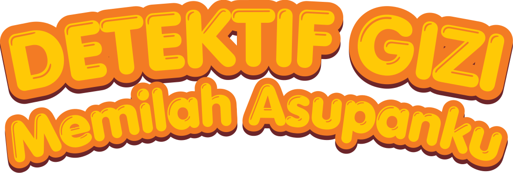
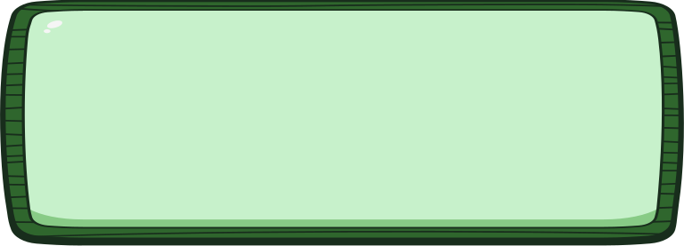
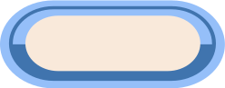
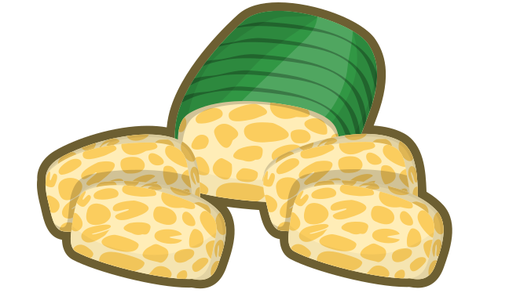

0
PETUNJUK PERMAINAN
- 1. Di setiap makanan, kamu bisa memilih lebih dari satu jawaban yang benar!
- 2. Klik tombol kandungan gizi yang sesuai, lalu tekan tombol [ Cek ].
- 3. Jawaban tepat menambah +10 poin!
- 4. Jika jawaban kurang tepat, ikuti petunjuk dan coba kembali.
0

0Sesi Kuis 1: Tempe Goreng
Apa kandungan pada makanan ini?

MISI SELESAI! MARI JAGA PENCERNAAN KITA!
Selamat! Kamu HEBAT menyelesaikan misi ini! Yuk, biasakan memilih makanan bergizi seimbang setiap hari agar tubuh tetap sehat, kuat, dan penuh energi. Sampai jumpa di misi berikutnya!
TOTAL SKOR:
100